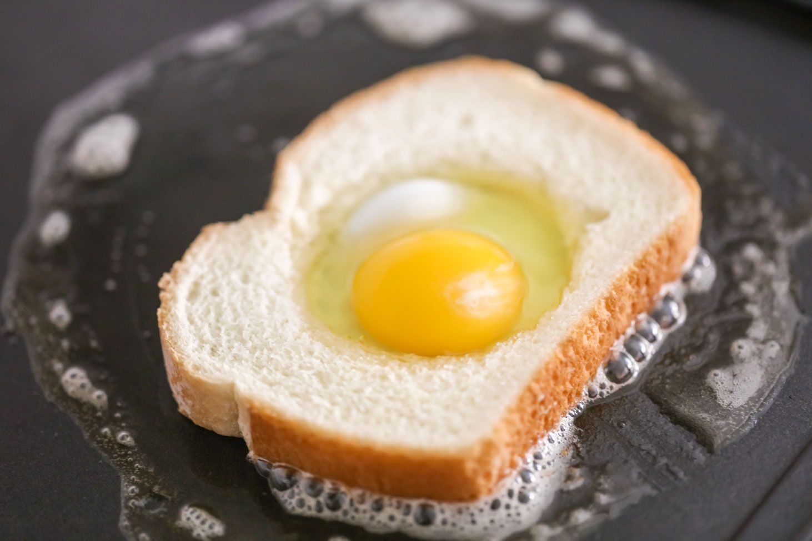

Pan con hoyo
Descripción
Un delicioso huevo dentro de un pan con un hoyo frito. Es un delicioso desayuno fácil y rápido de preparar.
Ingredientes
- 1 huevo
- 1 rebanada de pan
- aceite
- sal al gusto
- pimienta al gusto
Instrucciones
- Hacer un hoyo en la rebanada de pan usando un vaso.
- Calentar un sartén y poner aceite.
- Freir ligeramente el pan en el sartén por los dos lados.
- Poner el huevo dentro del hoyo del pan.
- Agregar sal y pimienta al gusto.
- Voltear cuidadosamente el pan junto con el huevo y freir del otro lado.
- Disfrutar de un delicioso desayuno.